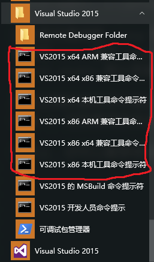

在 windows 下使用 clang（不需要重新编译）
- 需求
- 如何让 clang 使用 visual studio 2015 的头文件和链接器而不重新编译 clang
- 如何让 clang 使用 MinGW64 的头文件和链接器而不重新编译 clang
- 如何让 emacs 里面的 company-clang 正常工作
需求
官方网站中的 clang 是使用 Visual Studio 编译的，默认会使用 Visual Studio 的头文件和 链接器，但是如果想要使用 gcc 的头文件或者链接器怎么办？其他的教程大多数要求我们重新 编译 clang，而实际上我们不需要重新编译就可以使用 gcc 的头文件和链接器。在 clang 中， 控制这些的是一个命令行选项： --target 。在这篇博文中，我将介绍如下的内容：
- 如何让 clang 使用 visual studio 2015 的头文件和链接器而不重新编译 clang
- 如何让 clang 使用 MinGW64 的头文件和链接器而不重新编译 clang
- 如何让 emacs 里面的 company-clang 正常工作。
注意，我的 clang 是 64 位版的 v3.8.1，如果你用的是 32 位版或者别的版本，请参考我的 教程做一些修改。
如何让 clang 使用 visual studio 2015 的头文件和链接器而不重新编译 clang
如果我们直接使用官方编译版的 clang（我的是 v3.8.1）来编译文件，一般会得到如下的错误：
d:\Sources\cpp>clang 2.cpp
In file included from 2.cpp:1:
In file included from c:\Program Files (x86)\Microsoft Visual Studio 14.0\VC\include\cstdio:5:
In file included from c:\Program Files (x86)\Microsoft Visual Studio 14.0\VC\include\yvals.h:8:
c:\Program Files (x86)\Microsoft Visual Studio 14.0\VC\include\crtdefs.h:10:10: fatal error:
'corecrt.h' file not found
#include <corecrt.h>
^
1 error generated.
虽然 clang 会默认使用 msvc 的头文件，但是路径不全，有一些头文件仍然找不到。 根据https://www.zhihu.com/question/36659299 中的回答，我们可以新建一个 bat 文件，输入：
1 | call "%VS140COMNTOOLS%..\..\VC\vcvarsall.bat" |
然后在打开这个文件弹出的窗口中使用 clang 编译程序。文件第一行调用的 bat 会自动将 msvc 的头文件 目录加进环境变量中，这样 clang 就可以找到头文件了。注意这个环境变量是临时的，只有在打开的这一个 命令提示符窗口才有效。
但是有一些用户（比如我）在编译的的时候会产生另一个奇怪的错误：
d:\Sources\cpp>clang 2.cpp
2-fa894b.o : error LNK2019: 无法解析的外部符号 __acrt_iob_func，该符号在函数 printf 中被引用
2-fa894b.o : error LNK2019: 无法解析的外部符号 __stdio_common_vfprintf，该符号在函数 _vfprintf_l 中被引用
LINK : error LNK2001: 无法解析的外部符号 mainCRTStartup
C:\Program Files (x86)\Microsoft Visual Studio 14.0\VC\LIB\libcmt.lib : warning LNK4272:库计算机类型“X86”与目标计算机类型“x64”冲突
C:\Program Files (x86)\Microsoft Visual Studio 14.0\VC\LIB\libcpmt.lib : warning LNK4272:库计算机类型“X86”与目标计算机类型“x64”冲突
a.exe : fatal error LNK1120: 3 个无法解析的外部命令
clang.exe: error: linker command failed with exit code 1120 (use -v to see invocation)
这就是 target 出错而导致的问题。
看一下 clang 的版本：
d:\Sources\cpp>clang --version
clang version 3.8.1 (branches/release_38)
Target: x86_64-pc-windows-msvc
Thread model: posix
InstalledDir: c:\Software\LLVM\bin
这是官方编译版 clang 安装后的默认版本，可以看到其中的 target 信息是 x86_64-pc-windows-msvc ，这个 target 表示生成的程序类型， 最后的 msvc 表示 clang 会使用 msvc 的头文件和链接器，而前面的 x86_64 表示将使用 64 位的编译器来生成 64 位的程序。但是我的 visual studio 默认安装出来的是 32 位版，target 有误，编译的时候自然会报错了。
其实正确的编译命令是这样： clang --target=i686-w64-windows-msvc 2.cpp ，使用 target 参数来指定生成方式，前面的 i686 表示 使用 32 位的编译器来生成 64 位的程序。这下就可以正常生成而不出错了。
实际上，你可以直接使用开始菜单里面 visual studio 提供的命令行，它会自动配置好目标，在编译的时候就不需要指定 target 了，如下图所示： 
有时候在编译的时候会弹出一些 char 和 string 的错误，这个我也不知道该怎么解决，出现这种情况建议你改用 MinGW64。
如何让 clang 使用 MinGW64 的头文件和链接器而不重新编译 clang
这里我还是建议使用 64 位的 clang 和 gcc 的，因为我只测试了这一种组合。这么做不仅不会有上文中提到的 char 的问题，而且也不需要启用额外的 环境，还可以和 emacs 配合。
上一节我说明了 target 的用法，其实 target 也是可以指定使用 gcc 编译的，指令如下： --target=x86_64-w64-windows-gnu 。
我用的是 mingw64，所以就采用 x86_64 的参数了。在使用的时候还需要指定 include 参数来告诉 clang 头文件的位置。可以用一个 bat 来编译：
1 | clang -I c:/Software/MinGW64/mingw64/include/ -I c:/Software/MinGW64/mingw64/lib/gcc/x86_64-w64-mingw32/6.2.0/include -I c:/Software/MinGW64/mingw64/lib/gcc/x86_64-w64-mingw32/6.2.0/include/c++ -I c:/Software/MinGW64/mingw64/lib/gcc/x86_64-w64-mingw32/6.2.0/include/c++/backward -I c:/Software/MinGW64/mingw64/lib/gcc/x86_64-w64-mingw32/6.2.0/include/c++/mingw32 -I c:/Software/MinGW64/mingw64/lib/gcc/x86_64-w64-mingw32/6.2.0/include-fixed --target=x86_64-w64-windows-gnu %1 %2 %3 %4 %5 %6 %7 %8 %9 -lstdc++ -lsupc++ |
将上述 bat 命名为 myclang.bat 然后放到 clang 所在目录即可。你可能需要更改一下 mingw 的目录位置。编译的时候只需 myclang 1.cpp 即可。
其实还可以用环境变量来保存 include 目录，更多内容可以参考：http://blog.csdn.net/gocad/article/details/42297829。 但是这么做的话最后还是需要一个脚本来指定 target。如果 target 也可以放在环境变量里面就好了。我在知乎上提了这个问题，虽然目前还没有有用的 回答：https://www.zhihu.com/question/50031506
用 bat 脚本也有一个坏处：在输入参数的时候等号会被隔成两个参数，比如 myclang 2.cpp --std=c++11 ，最后一个参数会被分成两个，这是 cmd 的原因。 你可以在这个参数的两边加上双引号来解决这个问题，但是上面的 bat 最多只能传递 9 个参数的问题就解决不了了。
或者也可以用 powershell，新建一个 myclang.ps1 ：
1 | clang --target=x86_64-w64-windows-gnu -I c:/Software/MinGW64/mingw64/include/ -I c:/Software/MinGW64/mingw64/lib/gcc/x86_64-w64-mingw32/6.2.0/include -I c:/Software/MinGW64/mingw64/lib/gcc/x86_64-w64-mingw32/6.2.0/include/c++ -I c:/Software/MinGW64/mingw64/lib/gcc/x86_64-w64-mingw32/6.2.0/include/c++/backward -I c:/Software/MinGW64/mingw64/lib/gcc/x86_64-w64-mingw32/6.2.0/include/c++/mingw32 -I c:/Software/MinGW64/mingw64/lib/gcc/x86_64-w64-mingw32/6.2.0/include-fixed $args -lstdc++ -lsupc++ |
这么做的话只能在 powershell 里面调用这个脚本，调用方式和 bat 的一样，支持任意多的参数，而且参数不会被等号分开。注意调用的时候不要加后缀名 ps1。
我还写了一个同样功能的 python3 脚本，调用的方式和 powershell 的一样，需要加上后缀名 .py ，好处是可以在任何地方调用：
1 | import sys |
总结一下，现在可以轻松用 myclang 命令来编译 cpp 文件了，就像在 Linux 底下使用 clang 一样简单。
如何让 emacs 里面的 company-clang 正常工作
如果你使用的是 spacemacs 里面的 c-c++ layer，那这是很好办的。 参见：http://spacemacs.org/layers/+lang/c-c++/README.html#orgheadline2 只需要在项目的根目录下面建立一个文件 .company_clang ，然后把之前的参数放进去即可， 比如：
1 | --target=x86_64-w64-windows-gnu |
如果你没有使用 spacemacs 或者不想再每个项目中都单独配置选项的话，可以使用以下的代码：
1 | ;; 设置 windows 底下的 company-clang |
company-clang 使用一个函数 company-clang--build-complete-args 来生成传递给 clang 的 额外参数，生成出来的是一个列表。稍后这个参数会被 company 用来调用 clang。这里我使用 一个 advice 来在这个函数的返回值中另加入几项。

本作品采用 署名-相同方式共享 4.0 国际 进行许可。欢迎转载、使用、重新发布，但务必保留文章署名 “不科学的科学君” (Liu233w) 与博客链接： https://liu233w.github.io ，基于本文修改后的作品务必以相同的许可发布。如有任何疑问，请 与我联系 。